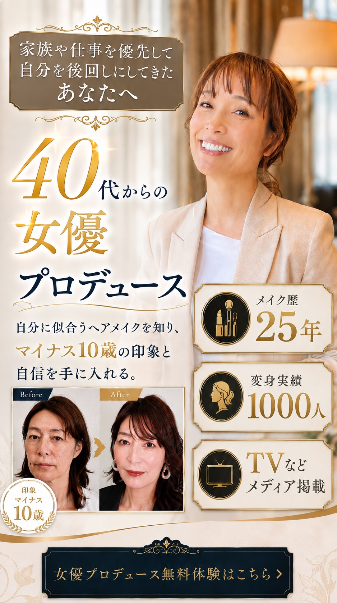
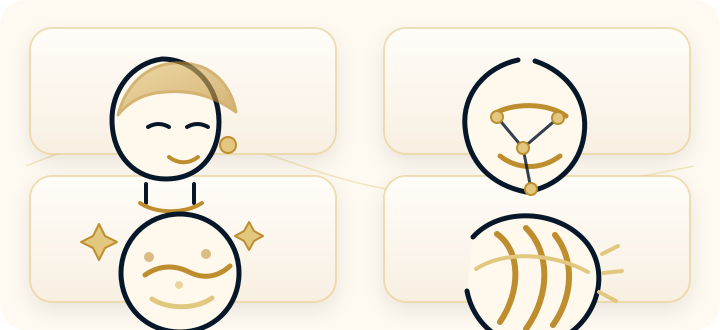
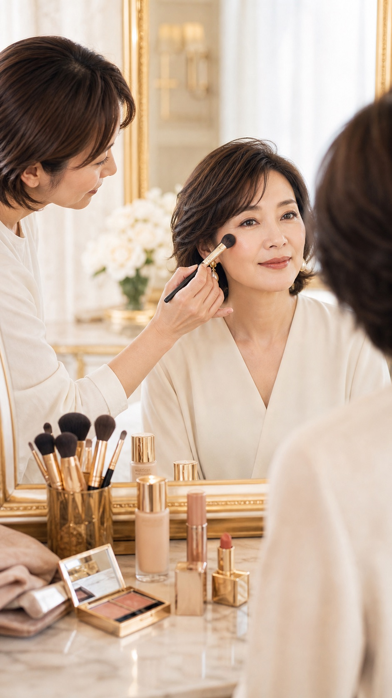

STEP 1
あなたの魅力を 分析
顔立ち・骨格・パーツバランス・ 雰囲気まで丁寧に診断します。
顔立ち
骨格
パーツバランス
雰囲気

Ideal Future
Current Concerns
True Reason
多くの女性は
「もっと高い化粧品が必要」
「もっと若作りしなきゃ」
そう思いがちです。 しかし本当の原因は違います。

年齢とともに変化しているのに、 20代・30代の頃と同じ メイクやヘアメイクを続けている。 だから頑張っても 似合わなくなるのです。
Original Method
顔立ち・骨格・パーツバランス・ 雰囲気まで丁寧に診断します。
似合うベースメイク・アイメイク・ チーク・リップ・ヘアスタイル・ ファッションを明確にします。
若作りではなく、 洗練された大人の美しさを 実現します。
Before / After
印象は、整え方で こんなにも変わります。
年齢は変わらない。 でも印象は変えられる。
Life Change
Profile
kumi プロフィール
若い頃の正解が、
ある日ふと似合わなくなる。
そんな戸惑いを抱えながらも、
本当はまだ美しくいたいと願う女性を
何人も見てきました。
年齢を隠すためではなく、
今の自分を好きになるために。
その人だけの魅力を見つけ、
女優のように光が当たる瞬間を
一緒に作りたい。
その想いから、
女優変身プロデュースを始めました。
Program

FAQ
はい。普段のメイク道具や習慣を伺いながら、無理なく続けられる方法をご提案します。
もちろんです。年齢に合わせた肌づくりや色選びで、今の魅力が伝わる印象へ整えます。
大丈夫です。難しいテクニックよりも、再現しやすい手順を大切にしています。
普段お使いのメイク道具があればお持ちください。足りないものは当日確認できます。
顔立ち・骨格・肌質・雰囲気を見ながら、あなたに似合う方向性を一緒に明確にします。
Free Trial
今が一番若い日です。
いつか変わりたいではなく、
今日から変わりませんか？
あなた本来の美しさを引き出す
第一歩をお手伝いします。